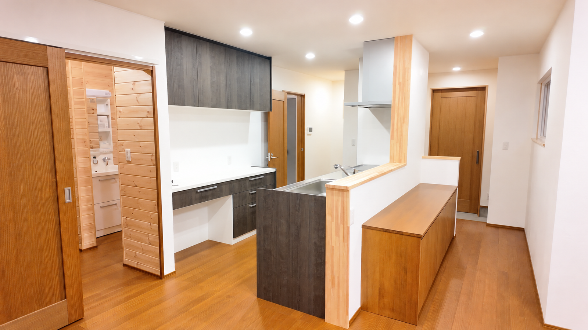
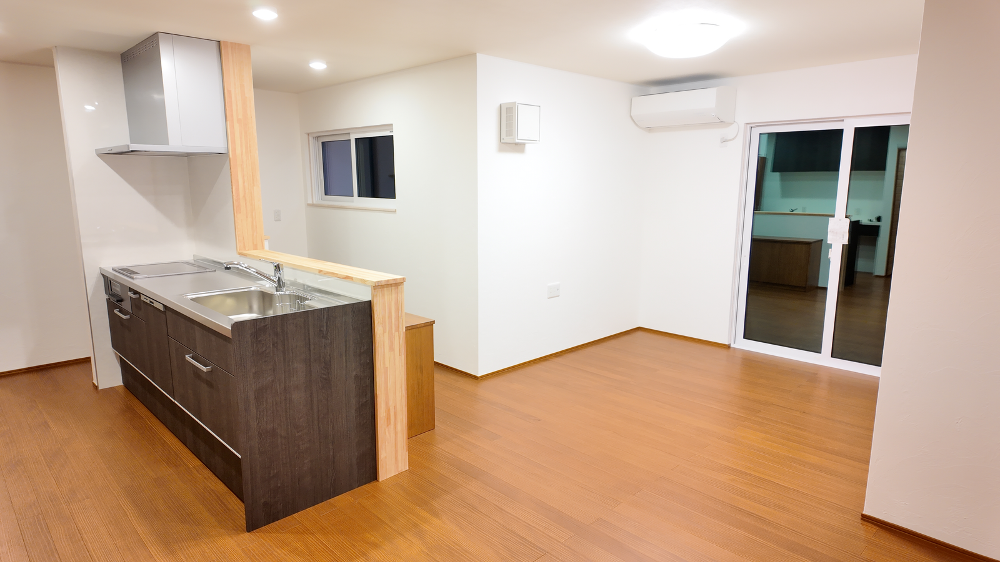
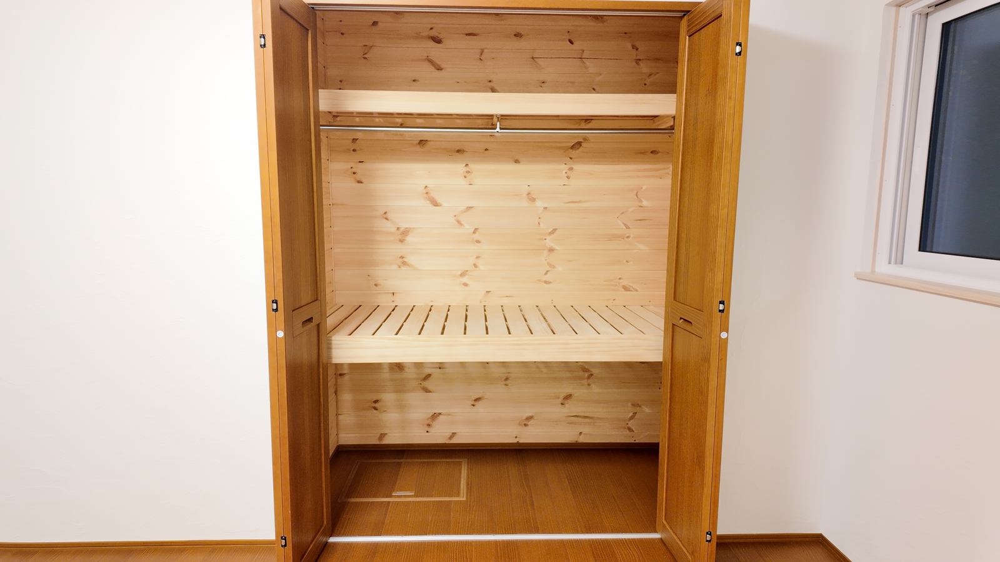
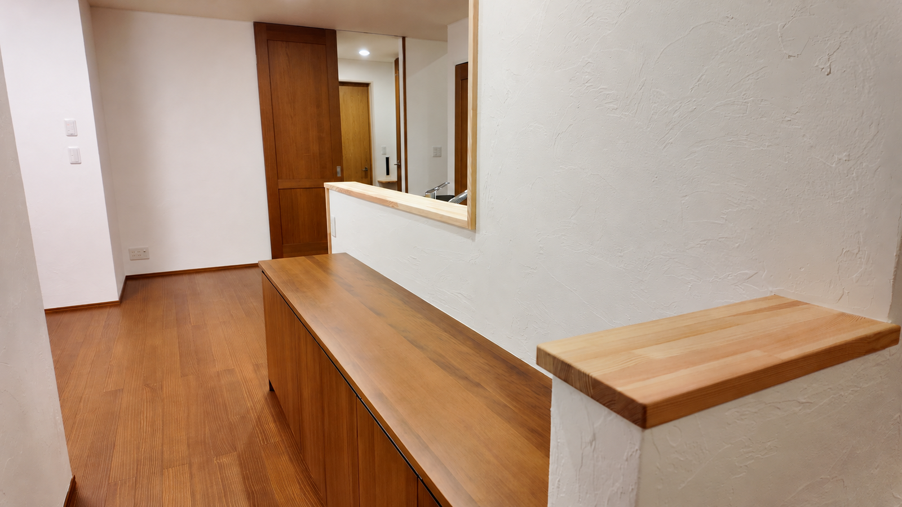
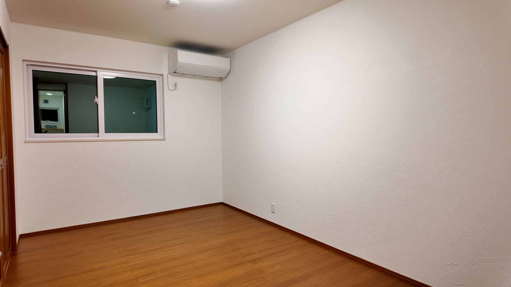
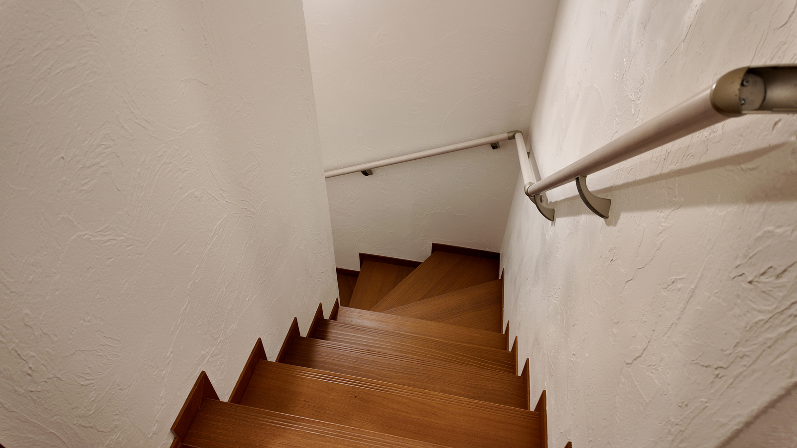

FUJISOU AINOS / OPEN HOUSE
完成見学会
写真の先にある、住み心地に出会う。
木の手触り、光の入り方、部屋から部屋へのつながり。
これからの暮らしを、実際の住まいで考えてみませんか。

INFORMATION
開催概要
2026年10月18日（日）まで開催期間を延長しました。
開催期間：2026年9月26日〜10月18日
この見学会は終了しました。次回の見学についてはお問い合わせください。
完全予約制・参加無料
- 開催日
- 〜
- 開催時間
- 9:00〜18:00
- 会場
- 富山県砺波市詳しい場所はご予約後にご案内します
- 見学方法
- 完全予約制・参加無料フォーム、LINE、お電話でご希望日時をお知らせください
- お問い合わせ
- 0800-200-2661受付 9:00–18:00 / 水曜・木曜定休
ご希望の日時をお知らせください。担当者からのご連絡で予約を確認し、会場をご案内します。
SEE. TOUCH. IMAGINE.
図面だけでは、分からないこと。
家を建てる前に、自分の感覚で確かめる時間を。
- 01
素材の表情を、近くで見る。
床や壁の手触り、木の色合い、光によって変わる表情。画面越しでは伝わらない質感をご覧ください。
- 02
毎日の動きを、歩いてみる。
玄関から室内へ、キッチンから食卓へ。ご家族の日常を思い浮かべながら、空間のつながりを確認できます。
- 03
気になることを、その場で聞く。
間取り、素材、性能、予算の考え方。写真や資料を見て疑問に思ったことも、気軽にご相談ください。
INSIDE THE HOUSE
この家で、確かめられること。
漆喰の表情、木の収納、部屋のつながり。見学する住まいの写真をご紹介します。





QUESTIONS
見学前に、気になること。
まだ土地や予算が決まっていなくても相談できますか？
はい。今のご希望やお悩みをお聞かせください。家づくりを考え始めた段階のご相談も受け付けています。
子どもと一緒に参加できますか？
ご参加人数とお子さまの年齢をお問い合わせ時にお伝えください。会場ごとのご案内や注意事項をお知らせします。
駐車場や会場の場所はどこで確認できますか？
会場は富山県砺波市です。詳しい場所と集合方法はご予約後にご案内します。
当日の見学や写真撮影はできますか？
受付状況と会場によって異なります。ご来場・撮影の前に必ずスタッフへご確認ください。
LET'S TALK
見学のご希望日時をお知らせください。
2026年9月26日〜10月18日、9:00〜18:00。
ご希望日時と参加人数をお知らせください。